özet
CollecZone; ürün listeleme, sepet, kullanıcı hesapları ve sipariş akışı olan bir web uygulaması. Koleksiyon meraklıları için küçük bir dükkân fikriyle başladı.
rolüm
Arayüz, backend yapısı, veritabanı işlemleri ve temel kullanıcı akışları üzerinde çalıştım.
kapsam
Ürün sayfaları, sepet işlemleri, kullanıcı girişi ve sipariş yönetimi gibi bir e-ticaret sitesinin olmazsa olmazlarını kapsıyor.
ekran görüntüleri
Sitenin iki modu var: renkli ve sade. Dil de Türkçe ile İngilizce arasında değişiyor. Görsellere tıklayınca büyüyor.

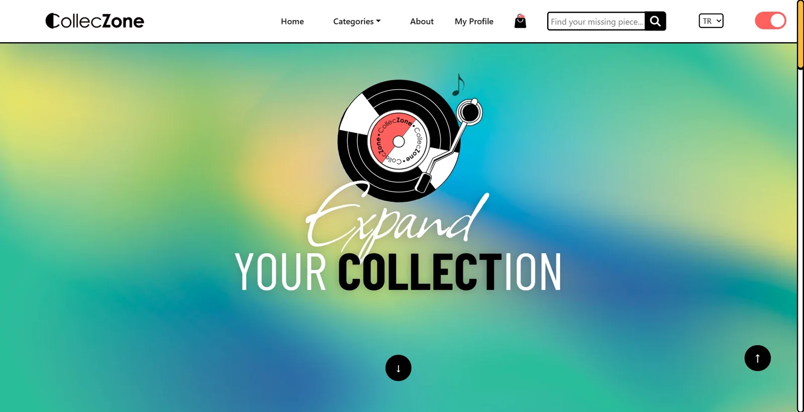

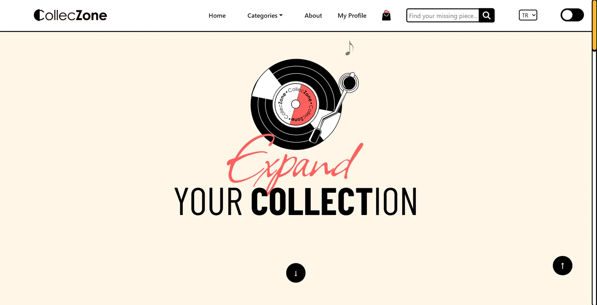

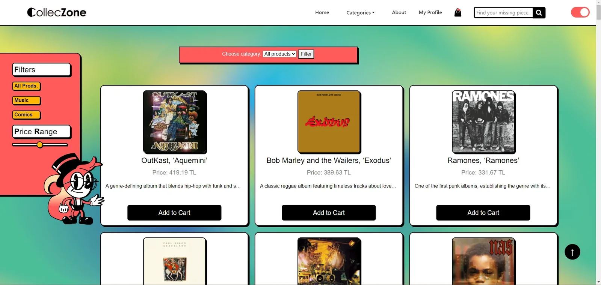

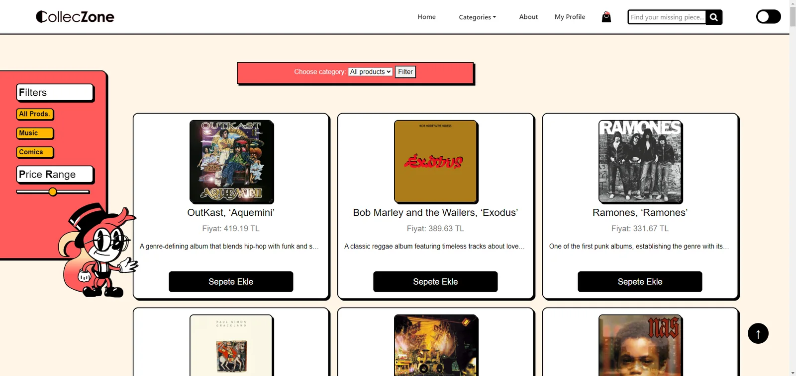

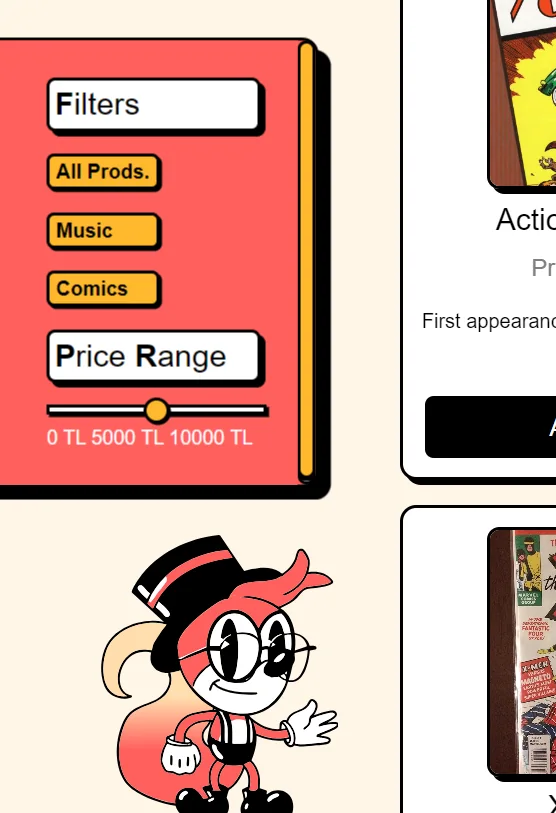

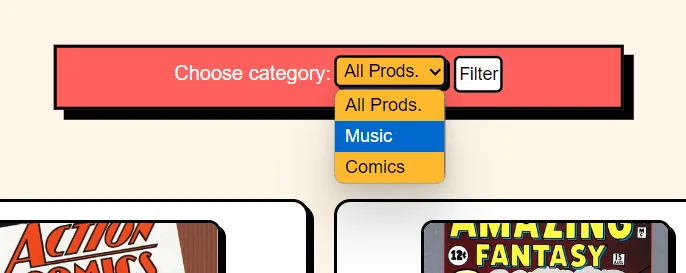

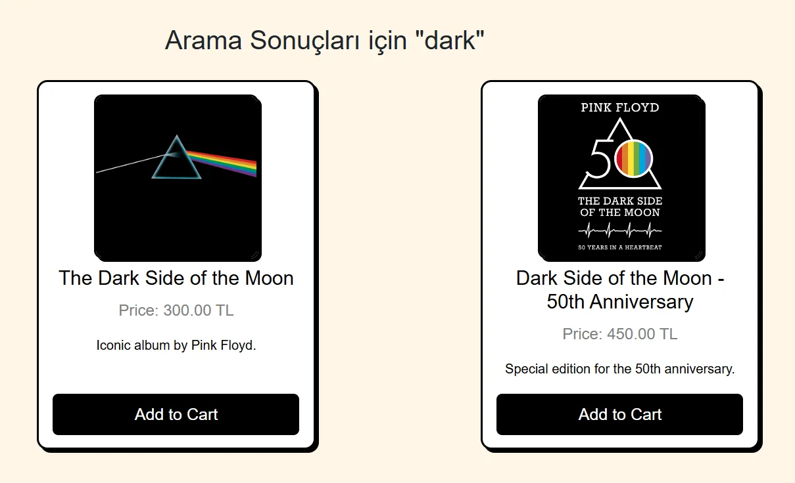

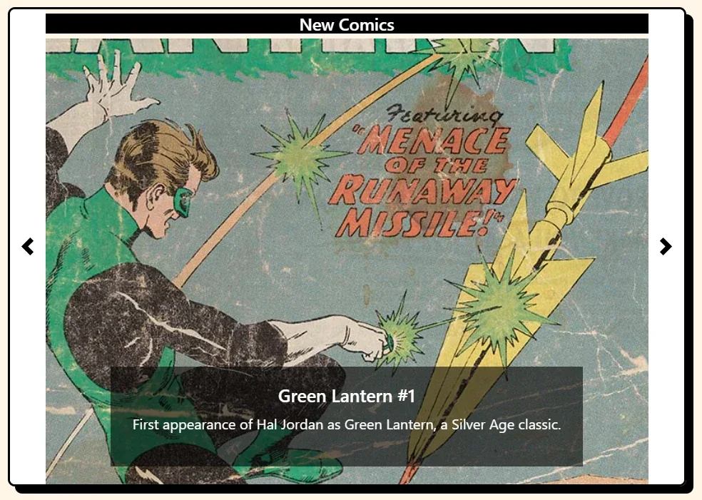

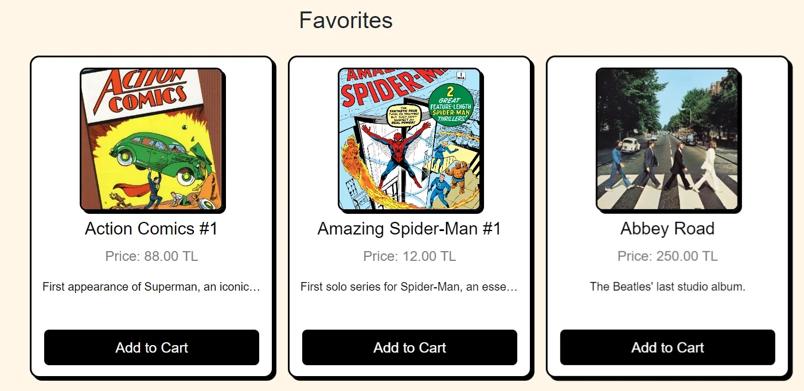

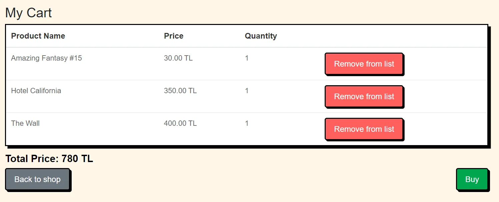

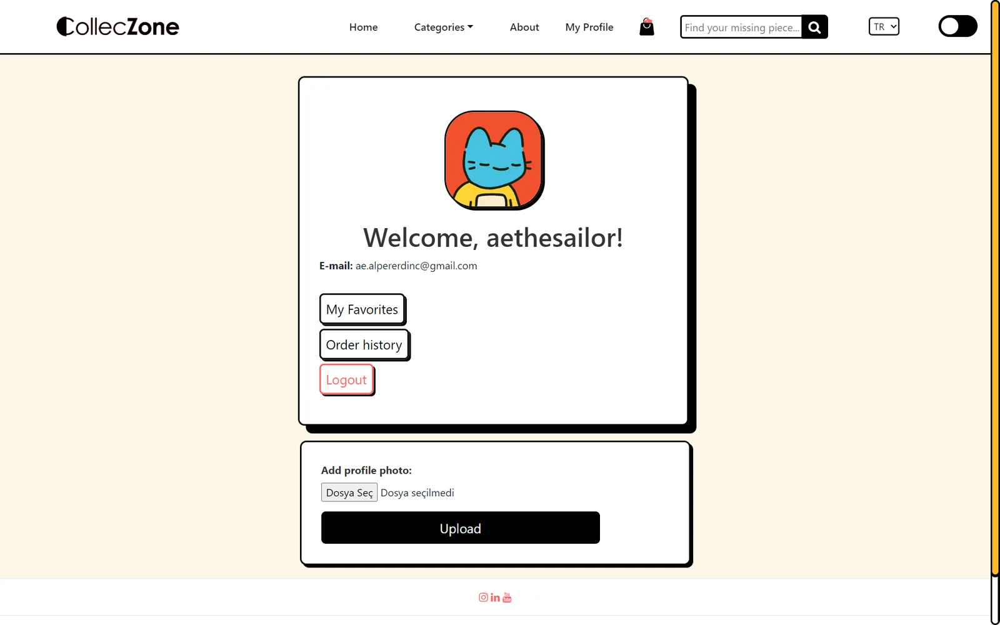
teknolojiler
- PHP
- MySQL
- HTML
- CSS
- JavaScript